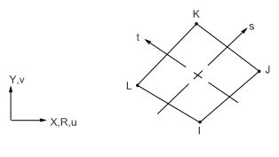

| Matrix or Vector | Geometry | Shape Functions | Integration Points | ||
|---|---|---|---|---|---|
| Stiffness and Stress Stiffness Matrices; and Thermal Expansion Load Vector | Quad | Equation 11–120 and Equation 11–121 |
| ||
| Triangle | Equation 11–100 and Equation 11–101 | 1 | |||
| Mass Matrix | Quad | Same as stiffness matrix | 2 x 2 | ||
| Triangle | 1 | ||||
| Pressure Load Vector | Same as stiffness matrix, specialized to the face | 2 | |||
| Thermal Conductivity Matrix and Heat Generation Load Vector | Quad | Equation 11–128 | 2 x 2 | ||
| Triangle | Equation 11–108 | 1 | |||
| Specific Heat Matrix | Same as conductivity matrix. Matrix is diagonalized as described in Lumped Matrices. | Same as conductivity matrix | |||
| Convection Surface Matrix and Load Vector | Same as conductivity matrix evaluated at the face | 2 | |||
| Thermoelastic Stiffness and Damping Matrices | Same as combination of stiffness and thermal conductivity matrices | ||||
General Element Formulations gives the general element formulations used by this element. Structures describes the derivation of structural element matrices and load vectors as well as stress evaluations. Heat Flow describes the derivation of the thermal element matrices and load vectors as well as heat flux evaluations. Thermoelasticity discusses the thermoelastic effects. Thermoplasticity discusses the thermoplastic effect.